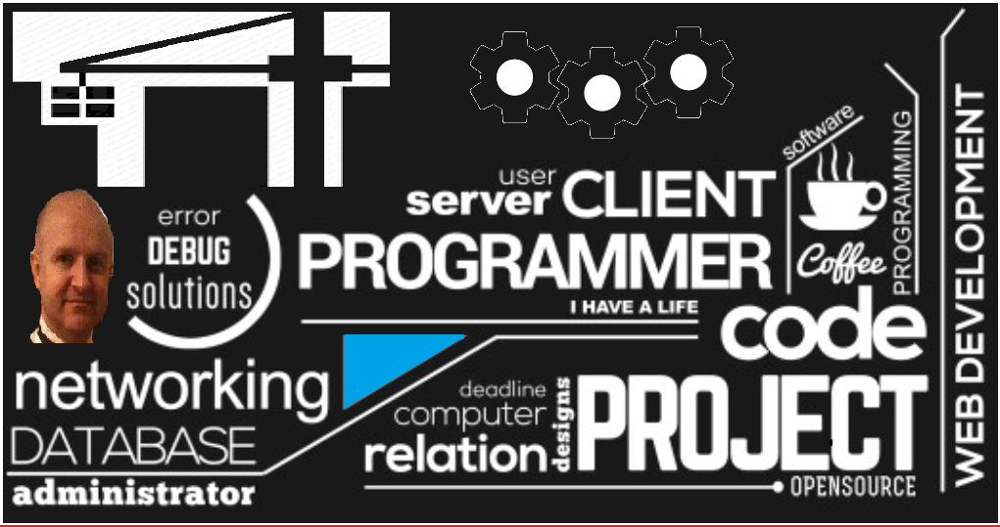
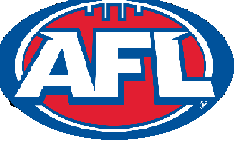

George Kralevski
Kralevski
Aspiring Web App Developer

Kralevski
Hi, my name is George and I am an aspiring web developer.
I love it when I see my code come alive on the screen and
make it do good things.
I understand the process of making a web site in order to help
achieve your big picture dream.
I can design a website from the ground up, I can have it interfacing
with your Databases and E-Mail systems for your back end processing.
I keep it simple to maximise a pleasurable Users Experience.
I have a wide range of skills that include HTML5 and CSS3, Javascript,
React, and Ruby on Rails.
My parents migrated from Macedonia to Australia in 1966.
Taking on the Melbourne culture I grew up watching football,
cricket, tennis, eating meat pies and fish and chips with friends.

In my late teens after high school I started my long career in
I.T. as a tape and printer jockey within an insurance computer
department.
Soon afterwards I was promoted as an Operations Analyst where I
provisioned resources to ensure a successful overnight batch schedule.
This was where I developed a knack for coding when I had a need to
code scripts in CList, Rexx, Korn, and Bash to automate manual processes.

My interests lead me to database administration, where I was more
invovled in projects, liasing with customers organizing their database
and table structures, and tuning their SQL codes.
Further opportunities took me to Backup and Storage management,
dealing with data backups and recovery strategies, provisoning storage,
volume replication, disk encryption, and disaster recovery planning.
Due to staff restructuring I was made redundant and decided to take
on a coding passion which brought me to the Coder Factory Acedemy
software development course that includes Ruby, Rails, HTML, CSS,
Javascripts, and React in order to become an accomplished
full stack developer.

Outside of IT I love the AFL sport where I get to go to games with
friends and enjoy the pace of the match especially when Geelong wins.
I am also an avid foodie fan, I particularly enjoy Thai cuisines and
street festivals, but most of all I love the chase of finding the
next great eat.